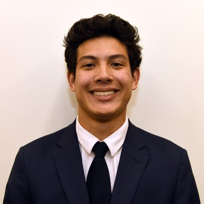

> about_me

Rising junior with a passion for innovating technology and using software to solve problems. My journey in coding started back in 5th grade when I made my first game and has grown into a lifelong dream where I hope to pioneer the future using AI. I am looking for software development opportunities where I can make a direct impact.
> education
Purdue University Class of 2026
- Bachelor of Science in Computer Science
- Bachelor of Science in Data Science
- Certificate in Entrepreneurship and Innoviation
> experience
- Incoming intern at Medxcel
- Intern at G&W
- Freelance
> interests
When I'm not coding, I am a huge sports fan. Growing up the youngest of 4 boys I was always active with basketball, football, and running track. Now you'll find me trying to improve on the golf course.